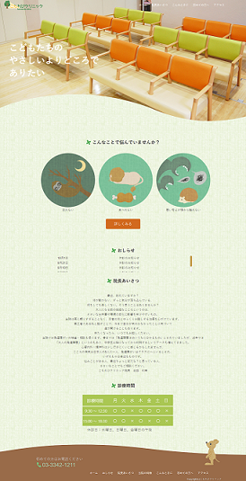

架空の児童心療内科サイト
制作時期：11月 制作期間:約７日間
ターゲット
心療内科の受診を考えている小中学生、およびその親
こだわり
敷居の高いイメージのある心療内科に少しでも親しみやすさを抱いてもらうため、優しいデザインを大切にしました。
近年は小中学生もネットを見るため、
親だけでなく子供自身が閲覧することも想定しています。
「こんなことで悩んでいませんか？」では受診する人の性別・雰囲気などに対して
先入観を与えず、「どんな人でも心療内科に来ていい」というメッセージを与えられるよう、
人間ではなく普遍的なキャラクター像となる動物のイラストを用いました。
制作範囲
イラスト、デザイン、コーディング
使用ツール：HTML,CSS,JavaScript,JQuery,Photoshop,ibisPaint X
実際のページはこちら